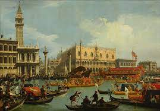

San Marino je najstarija ustavna republika koja je zavisila od Venecije.
Iako su tokom ranog srednjeg veka bili feud vojvode od Spoleta, bili su slobodna kolonija sa sopstvenom upravom i saborom u kojem su, po ugleda na antičku Rimsku republiku, sedele starešine svih porodica. Sabor je bio poznat kao „Arengo“.